Sieben Prinzipien
Daran hält sich jedes Stück
- Zwei Seiten, eine Linie. Alles, was wir machen, hat zwei Seiten, die sich treffen: zwei Menschen, zwei Hände, Alt und Neu. Diesen Moment setzen wir in die Mitte, auf eine senkrechte Linie. So weiß das Auge, wohin es schauen soll.
- Dinge treffen sich, dann ist Ruhe. Jede Bewegung hat vier Schritte: Zwei Dinge nähern sich, berühren sich, hinterlassen eine Spur und kommen zur Ruhe. Eine Zahlung kommt an, eine Münze fällt, ein Eintrag ist bestätigt. Die Zeichen dürfen spielen; der Bildschirm rundherum bleibt ruhig.
- Ein Rot, als Licht. Rot gibt es einmal pro Screen oder Bild, nur auf dem Wichtigsten und nur auf einer kleinen Fläche. Es ist nie Dekoration. Jede App hat ihre eigene Akzentfarbe; die Regel bleibt.
- Echte Materialien. Papier, Holz, Messing, Glas, Ziegel: Dinge zum Angreifen, abgenutzt und von Hand gemacht. Keine glänzenden Verläufe. Ein Ornament braucht eine Bedeutung, sonst fliegt es raus.
- Alle Jahrzehnte zugleich. Unsere Welt mischt 1910, 1968, 1986, 1999 und 2050 in einem Raum, so wie Wien. Mit Absicht, nie als Kostüm und nie als glänzende Zukunftsvision.
- Zwei Modi: die Bühne und der Beleg. Die Bühne ist dunkel und stimmungsvoll: für Bilder, Geschichten und den ersten Eindruck. Der Beleg ist hell: schlichtes Papier, schwarze Tinte, klare Zahlen. Er gilt, wenn jemand bestätigt, unterschreibt oder zahlt. Dieser Moment wird nie dekoriert.
- Schrift wird gesetzt, nie generiert. Wörter in Archivo, Zahlen und Daten in IBM Plex Mono, Titel gezeichnet oder von Hand gesetzt. Keine KI schreibt Text in ein Bild.
Der Test für alles Neue: Deck den Namen ab. Erkennt man Beidwerk noch? Ist klar, wer es gemacht hat? Interessiert es in hundert Jahren noch jemanden? Ist eine Antwort Nein, ist es nicht fertig.
Die vier Zeichen
Alle Formen, die wir brauchen
Jedes Bandmitglied hat ein rotes Zeichen: ECHT einen Ring, STAMM einen senkrechten Strich, BOGEN einen Halbkreis, SCHLAG ein Quadrat. In der Typografie ist der Stamm der senkrechte Strich eines Buchstabens und der Bogen seine Rundung. Zusammen ergeben die vier Zeichen also ein B, das Zeichen von Beidwerk. Jedes Logo, Muster, Icon und Bühnenbild entsteht aus diesen vier Formen und geraden Linien. Jede andere Form braucht einen guten Grund.
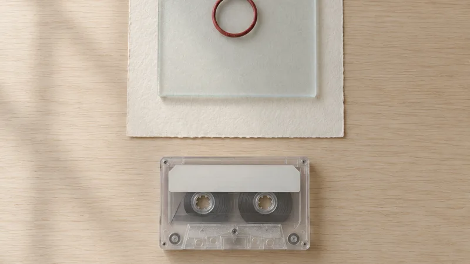
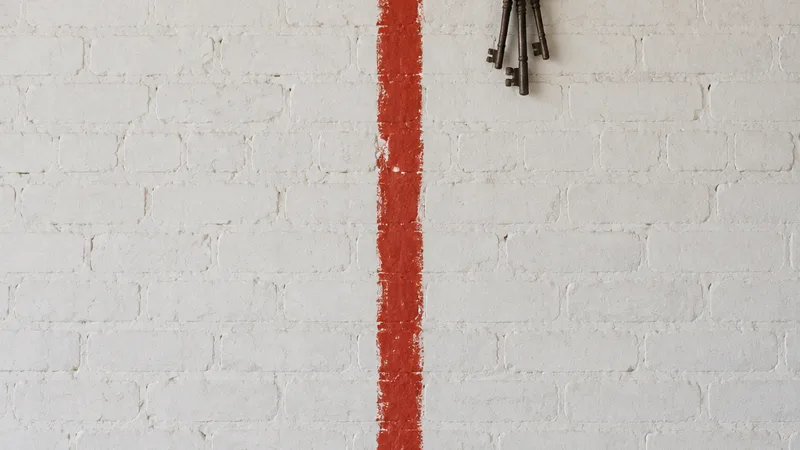
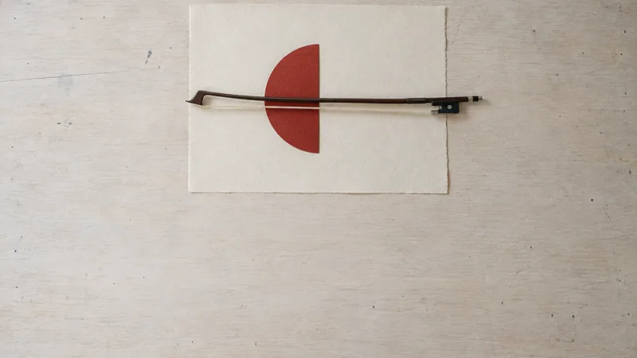
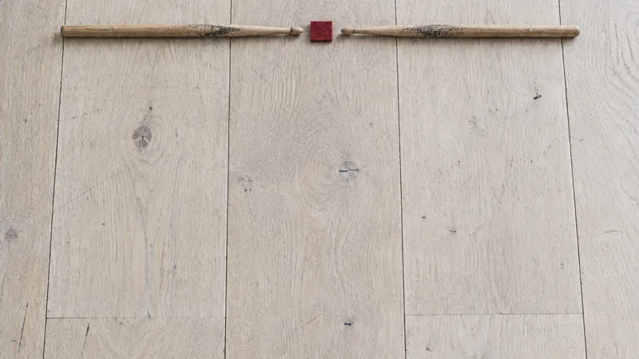
- 01
 Ring · ECHTStimme · 2050
Ring · ECHTStimme · 2050das Licht, wo sich die zwei Hälften des B treffen
- 02
 Strich · STAMMGitarre · 1999
Strich · STAMMGitarre · 1999der Stamm, der senkrechte Strich des B
- 03
 Halbkreis · BOGENKontrabass · 1910
Halbkreis · BOGENKontrabass · 1910der Bogen, die Rundung des B
- 04
 Quadrat · SCHLAGSchlagzeug · 1968
Quadrat · SCHLAGSchlagzeug · 1968der Takt, der das B zusammenhält
Die Sticker
Jede App, verspielt gezeichnet
Jede App bekommt einen Sticker: zwei der vier Zeichen, die sich treffen, rundlich und ein bisschen unperfekt, wie ein Sticker auf dem Laptop oder Gitarrenkoffer. Verspielt sind nur die Zeichen, die Screens rundherum bleiben ruhig.
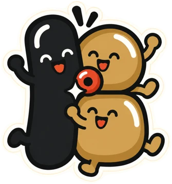
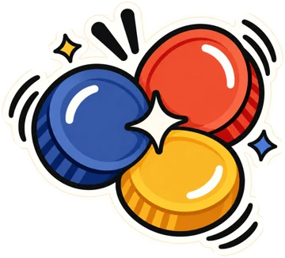
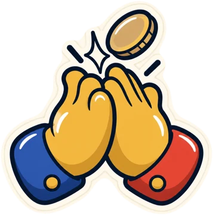
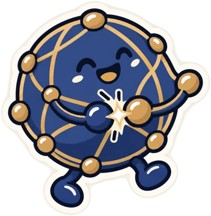
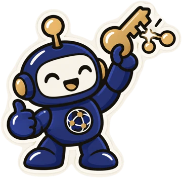
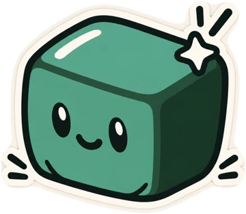
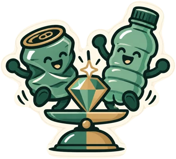
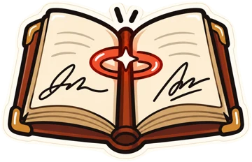
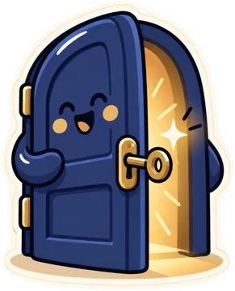
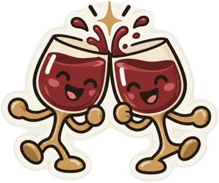
Die Bühne und der Beleg
Zwei Modi, eine Sprache
Beidwerk hat zwei Modi. Die Bühne ist die Nacht: warmes Lampenlicht vor tiefem Grün, weiches Korn. Hier leben Bilder, Plakate, Header und Onboarding. Der Beleg ist der Tag: ruhiges Papier, schwarze Tinte, klare Zahlen und ein Rot. Er kommt überall dort zum Einsatz, wo zwei Menschen bestätigen, unterschreiben oder zahlen. Dieser Moment wird nie dekoriert.
Tapsigned · die Bühne
Deine Arbeit, von beiden bestätigt.
Header, Bilder, Empty States und Onboarding gehören auf die Bühne.
Der Beleg · von beiden Seiten bestätigt
| 1 Melange | € 3,80 |
| Café Ewig, Wien 7 | 2026-03-14 07:30 |
| Bestätigt von | Anni H. · ECHT |
Bestätigt Freiregister #1
Treffen und Bewegen
Vier Schritte für jede Animation
Jede Bewegung folgt denselben vier Schritten, wie ein Handschlag oder eine Zahlung.
| Schritt | Was passiert | Dauer |
|---|---|---|
| Annähern | zwei Dinge kommen aufeinander zu: zwei Münzen, zwei Hände, Stift und Blatt | 300–500 ms, kurz Schwung holen davor |
| Berühren | sie berühren sich, ein kleiner Funke und zwei Striche markieren den Moment | 60–120 ms, der Funke 550–1000 ms |
| Spur | etwas bleibt: ein Echo, ein Klang, eine Unterschrift | blendet aus |
| Ruhe | ein klarer Endzustand: eine Summe, ein bestätigter Eintrag | 400–800 ms, kurz nachfedern, dann Stille |
Verspielt sind nur die Zeichen und der Moment der Berührung, die Seite rundherum bleibt ruhig. Wer reduzierte Bewegung eingestellt hat, sieht keine Animation, sondern gleich den Endzustand.
Farben
Aus den Bildern der Band
Die Bühnenfarben sind aus der Concept Art der Band gemessen. Alle Farben für Text und Flächen erfüllen die Kontrastregeln für Barrierefreiheit: 4,5:1 für Text, 3:1 für Zeichen und Linien.
Die Bühne
buehne
#0E130C · #0E130C
16.5:1 auf Papier
kupfer
#20422F · #20422F
9.8:1 auf Papier
gold
#8C6B3A · #C69C66
4.3:1 auf Papier
wolfram
#E7AE72 · #E7AE72
1.7:1 auf Papier
rotlicht
#C93A20 · #E75839
4.5:1 auf Papier
Der Beleg
paper
#F4F0E8 · #161513
1.0:1 auf Papier
paper-raised
#FBF8F2 · #1F1D1A
1.1:1 auf Papier
ink
#1C1B19 · #EFEAE1
15.1:1 auf Papier
ink-muted
#5E5A52 · #A9A397
6.0:1 auf Papier
rule
#8C867A · #6B665D
3.2:1 auf Papier
Akzente
zinnober
#B8321C · #F0694D
5.3:1 auf Papier
indigo
#24346B · #93A3DB
10.4:1 auf Papier
soga
#8A5A2B · #C9935C
5.2:1 auf Papier
Schrift
Zwei freie Schriften
Kaputt und schön.
Behalt dein Schlüssel.
Nicht für dich. Mit dir.
Archivo für alle Wörter: Überschriften fett und eng, Fließtext ruhig und klar.
IBM Plex Mono · der Beleg · Labels in Versalien
1 Melange · € 3,80 · 2026-03-14 04:12 · 17 % · 7f3a…c91e
Archivo für Wörter, IBM Plex Mono für Zahlen, Daten und Labels. Beide sind frei und Teil des Kits. Titel bekommen eine Display-Schrift aus dem Wien um 1900, Plakate werden von Hand gemalt. Schrift wird immer ausgewählt oder gezeichnet, nie in einem Bild generiert.
Niemals
Was wir weglassen
- Lila, Pink oder glänzendes „Tech"-Blau; dekorative Verläufe
- mehr als ein Rot in einem Bild oder auf einem Bildschirm
- Gold als Schriftfarbe, als Verlauf oder als Plastik
- Text, Zahlen oder Logos, die in einem Bild generiert werden
- die Klischees der Branche: leuchtende Blockchains, Münzen mit Gesichtern, Roboter
- Schlagschatten und Pill-Buttons im Interface
- alles, wodurch sich Menschen beobachtet oder eingesperrt fühlen